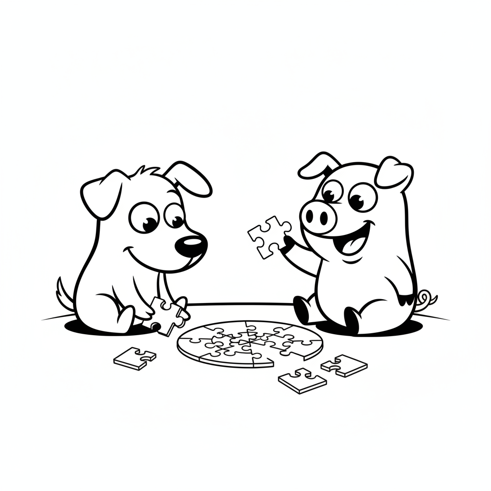

この記事でわかること
- 犬と豚は「学習の種類」がそもそも違うため、単純な速さ比べが難しいこと
- コマンド理解では、上位の犬種が5回未満の反復で新しい指示を覚えるという報告があること
- 迷路や道具を使う課題では、豚のほうが少ない試行回数で正解にたどり着いたとする研究があること
- 学習の速さの違いは、脳の大きさだけでなく「何のために発達した学習能力か」に関係している可能性があること
「お手」や「まて」を数回教えただけで覚えてしまう犬。一方で、鼻先でジョイスティックのようなものを操作し、画面の的にカーソルを合わせられる豚。どちらも「賢い」と言われますが、その中身はまったく別物かもしれません。
長年、豚と鶏の飼育に携わってきた立場から見ても、犬と豚の「覚えの良さ」はタイプがまるで違うと感じます。本記事では、研究で報告されているデータをもとに、犬と豚の学習速度を科学的な視点で比較していきます。獣医学的な立場ではなく、あくまで研究で得られた知見をわかりやすく紹介する視点でまとめました。
「学習が速い」とはそもそも何を指すのか
動物の学習速度を調べる研究では、主に2つの指標が使われます。ひとつは「新しい課題を覚えるまでに何回の試行が必要か」という反復回数。もうひとつは「一度覚えた行動を、次にどれくらいの確率で正しく行えるか」という成功率です。
ただし、ここで注意したいのは、研究ごとに測っている課題の種類がまったく違うという点です。人の指示に従う課題、迷路を抜ける課題、道具を操作する課題では、求められる能力が異なります。そのため「犬と豚、どちらが速いか」という問いには、まず「何をする速さなのか」を分けて考える必要があります。
図解: 学習速度を測る実験の基本的な流れ
この「正解にたどり着くまでの回数」が少ないほど、その課題については学習が速いと判定されます。

遊び方ひとつをとっても、犬と豚では興味の示し方が違って見えます。
犬の学習スピード:「コマンド理解」の科学
犬の「賢さ」を語るとき、よく使われるのが服従訓練における学習速度です。大規模な調査によれば、上位のグループに分類される犬種は、新しいコマンドを5回未満の反復で理解し、初回で正しく応じる割合も95%以上になるとされています。一方で下位のグループでは、同じコマンドの理解に80〜100回もの反復が必要になることがある、という報告もあります。
さらに興味深いのは、個体によっては1000語以上のモノの名前を覚えたとされる事例が報告されていることです。これは、犬が「人の言葉と物」を結びつける能力に非常に長けていることを示す一例として紹介されています。
表: 犬の「コマンド理解の速さ」による分類の目安
| 分類 | 新しいコマンド理解に必要な反復回数 | 初回で従う割合の目安 |
|---|---|---|
| 最上位グループ | 5回未満 | 95%以上 |
| 優秀な作業犬グループ | 5〜15回 | 85%前後 |
| 平均より上のグループ | 15〜25回 | 70%前後 |
| 標準的なグループ | 25〜40回 | 50%前後 |
※オビディエンス(服従訓練)審査員への調査をもとにした分類の目安です。個体差が大きく、犬種だけで断定できるものではありません。
豚の学習スピード:ジョイスティック実験と迷路課題
豚に関する有名な実験のひとつに、鼻先でジョイスティックのような装置を操作し、画面上のカーソルを的に合わせるという課題があります。ある大学の研究チームが行ったこの実験では、豚がこの抽象的な操作を習得できることが確認されており、多くの犬にとっては難しいとされるタイプの課題です。
また、複雑な問題解決課題を犬と豚それぞれに与えたある研究では、豚は平均15回程度の試行で正解にたどり着いたのに対し、犬は平均25回程度の試行を要したという結果が報告されています。ただし、これは特定の一つの課題における結果であり、あらゆる場面で豚が犬より速いことを意味するわけではない点に注意が必要です。
このほかにも、豚は鏡を使って隠された食べ物の位置を推測できること、数年単位で餌の隠し場所を記憶していられること、初めて見る物に強い好奇心を示すことなどが報告されています。物事をじっくり観察し、自力で答えを探すタイプの学習を得意としているようです。

豚は困りごとを自力で解決しようとする傾向が強いとされています。
犬と豚を同じ条件で比べた研究では?
2019年に発表された研究では、訓練を受けていない生後4か月の子豚と子犬を対象に、人が指差しなどの合図を示したときの反応が比較されました。結果、両者は人の合図に対して似たような反応を見せ、指差しのような伝達的なサインを読み取る能力そのものに、犬と豚で本質的な差はないのではないか、と結論づけられています。
ただし同じ研究では、犬にとって人という存在が特別に強い社会的な合図として機能しやすいため、特別な訓練をしなくても人からの合図に反応しやすい、という違いも指摘されています。つまり、能力の差というより「人に注目しやすいかどうか」という性質の差が、結果として学習のしやすさに表れている可能性があるということです。
別の実験では、パズルのような課題を与えられたとき、子豚は自力で解決しようと粘り強く取り組み続けたのに対し、子犬は途中で人間のほうを見て助けを求める行動を見せたという報告もあります。これは学習の速さというより、学習の「スタイル」の違いを表す興味深い例といえます。
表: 犬と豚の学習に関する特徴の比較
| 項目 | 犬 | 豚 |
|---|---|---|
| 人の合図への反応 | 非常に速い(特別な訓練なしでも反応しやすい) | 合図を読み取る力自体は同程度とする報告あり |
| 自力での問題解決 | 困ると人を頼る傾向 | 粘り強く自力で挑み続ける傾向 |
| 長期記憶 | 飼い主との関係性の記憶に強い | 餌の隠し場所などを年単位で記憶 |
| 新しいコマンドの習得 | 上位犬種で5回未満の例も | 課題によっては犬より少ない試行数の報告も |

犬は人からの合図をきっかけに学習が進みやすいとされています。
なぜ差が生まれる?学習速度を左右する脳のしくみ
一部の解説記事では、豚は体の大きさに対する大脳皮質の割合が犬より大きく、それが複雑な推論や抽象的な思考を得意とする一因ではないか、と紹介されています。まだ議論の余地がある見方ではありますが、豚が道具を使うような課題を得意とする背景として興味深い視点です。
一方、犬がコマンドを速く覚えられるのは、単純な処理能力の高さというより、長い年月をかけて人と暮らすなかで培われてきた「人の表情や視線、指差しを読み取る力」に特化した社会的な認知能力によるところが大きいと考えられています。つまり、犬の学習の速さは「人向けにチューニングされた学習能力」であり、豚の学習の速さは「独力で環境を理解する学習能力」だと捉えると、両者の違いがわかりやすくなります。
グラフ: 課題ごとの試行回数の目安
※「上位犬種のコマンド理解」と「問題解決課題での豚・犬の比較」は、それぞれ別の研究・別の課題に基づく数値です。同じものさしで測った結果ではない点にご注意ください。
同じ「犬」でも幅がある:犬種による学習速度の違い
先ほどの分類表からもわかるように、犬は犬種によって学習速度に大きな幅があります。上位グループと下位グループを比べると、新しいコマンドの理解に必要な反復回数は20倍以上も違うことになります。これは、犬という一つの種のなかでも、もともと担ってきた役割(牧羊、狩猟、番犬、愛玩など)によって、人の指示への反応の仕方が大きく異なってきたためだと考えられています。
つまり「犬は学習が速い」とひとくくりにするのは、実はやや乱暴な言い方でもあります。豚と比較する場合も、「どの犬種の、どんな課題における速さなのか」を意識すると、研究データの見え方がぐっとクリアになります。
豚も芸を覚える?ミニブタの訓練報告
近年はペットとして迎えられるミニブタも増えており、犬と同じようにトイレの場所を覚えたり、簡単な合図に応じて座ったりする姿が報告されています。長年にわたり豚の飼育に関わってきた経験からしても、豚は同じ手順を数回繰り返すと、その流れ自体をかなり早い段階で覚える印象があります。えさの時間や飼育担当者の動き方のパターンを察知するのも早く、犬のように「人の顔色をうかがう」というより、「状況そのものを観察して先を読む」タイプの覚え方をしているように見えます。
この観察は研究データとも矛盾しません。豚が得意とするのは、人の指示待ちではなく、環境の変化やパターンを自分で見つけ出す学習だと考えられているからです。飼育の現場感覚と研究結果が一致する、興味深いポイントだといえるでしょう。
よくある質問
Q. 結局、頭がいいのは犬と豚どちらですか?
A. 「頭のよさ」の物差しが違うため、単純に優劣をつけるのは難しいというのが研究者の見方に近いです。人の指示に従う学習では犬、自力での問題解決では豚が強みを見せることが多い、と考えるとわかりやすくなります。
Q. 豚に犬と同じようにコマンドを教えることはできますか?
A. 座る・触れるといった簡単な動作であれば、繰り返しと餌などのごほうびを使って覚えさせられるという報告があります。ただし、人の指差しなどの合図に自発的に注目する度合いは犬ほど高くない可能性があるため、教え方には工夫が必要です。
Q. コマンドを覚えるのが遅い犬種は賢くないのですか?
A. 反復回数はあくまで「人の指示への反応の速さ」を測る一つの指標にすぎません。嗅覚を使った探索能力や独立心の強さなど、別の側面で優れている犬種も多く、反復回数の多さがそのまま知能の低さを意味するわけではありません。
まとめ:結局、どちらが「速い」のか
ここまで見てきたように、「犬と豚、どちらが学習が速いか」という問いには、ひとつの答えでは片づけられません。人からの指示を覚えて従うという課題では、長年の共進化によって人向けに磨かれた犬の社会的な認知能力が強みを発揮し、上位の犬種であれば数回の反復で新しいコマンドを覚えてしまいます。
一方、道具を使ったり、迷路のような課題を自力で解いたりする場面では、豚が犬と同等か、それ以上の成績を残したとする研究も存在します。粘り強く自分で答えを探すタイプの学習が得意なようです。
つまり犬と豚は、どちらが優れているというより、それぞれ違う種類の「速さ」を持っていると考えるのが実情に近いといえそうです。長年、豚や鶏の飼育に関わってきた経験からも、この「学習スタイルの違い」を知っておくと、動物たちの行動をより深く楽しめるようになると感じています。
参考文献
- Comparing interspecific socio-communicative skills of socialized juvenile dogs and miniature pigs, PMC(2019年発表の比較研究)
- スタンレー・コレン『犬の知能(The Intelligence of Dogs)』(オビディエンス審査員への大規模調査に基づく分類)
- ペンシルベニア州立大学の研究チームによるジョイスティック実験に関する報告
- 豚の問題解決能力・記憶力に関する複数の動物行動学レビュー記事
関連記事
※.